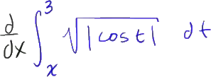

We want to find the derivative with respect to x of all of this business right over here.

And you might guess-- and this is definitely a function of x.
x is one of the boundaries of integration for this definite integral.

We want to find the derivative with respect to x of all of this business right over here.
And you might guess-- and this is definitely a function of x.
x is one of the boundaries of integration for this definite integral.

So if I'm taking the definite integral from a to b of f of t, dt, we know that this is capital F, the antiderivative of f, evaluated at b minus the antiderivative of F evaluated at a.

So the negative of that-- of a to b of f of t, dt, is just going to be equal to the negative of this, which is equal to-- so it's the negative of f of b minus f of a, which is equal to capital F of a minus capital F of b.
All I did is distribute the negative sign and then switch the two terms.

But this right over here is equal to the definite integral from, instead of a to b, but from b to a of f of t, dt.
So notice, when you put a negative, that's just like switching the signs or switching the boundaries.

We can rewrite this as being equal to the derivative with respect to x of-- instead of this, it'll be the negative of the same definite integral but with the boundaries switched-- the negative of x with the upper boundary is x, the lower bound is 3 of the square root of the absolute value of cosine t, dt, which is equal to-- we can take the negative out front-- negative times the derivative with respect to x of all of this business.
I should just copy and paste that, so I'll just copy and paste.
Let me-- and paste it.
So times the derivative with respect to x of all that, and now the fundamental theorem of calculus directly applies.


So it's going to be negative square root of the absolute value of cosine of not t anymore, but x.